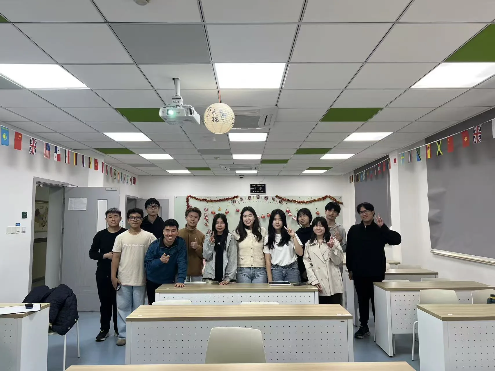

PEOPLE · ORIGINAL NAMES AND THUMBNAILS
Meet the students behind the coding community.
This page restores the Version 1 member experience inside the latest design: names, roles and thumbnail photographs remain, while personal Instagram links are removed.

Privacy change: Instagram links have been removed. The requested names, thumbnails, origins,
study interests and quotations are retained from the supplied Version 1 source, but the club
should still confirm consent before public deployment.
COMMITTEE
Student leadership.
Select a thumbnail to read the retained profile without exposing a social-media link.
MEMBERS
The wider club community.
Three archived photographs still lack enough verified written information and remain marked as pending confirmation.